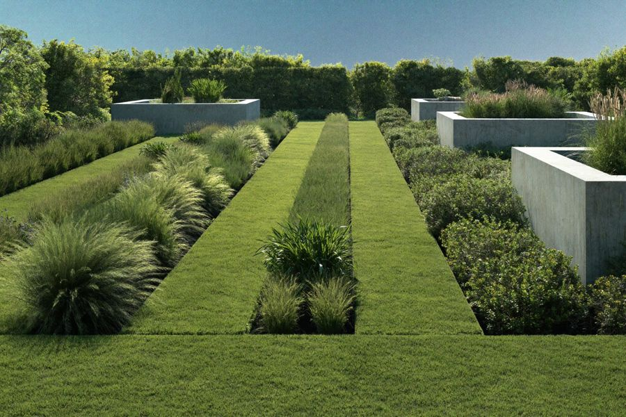
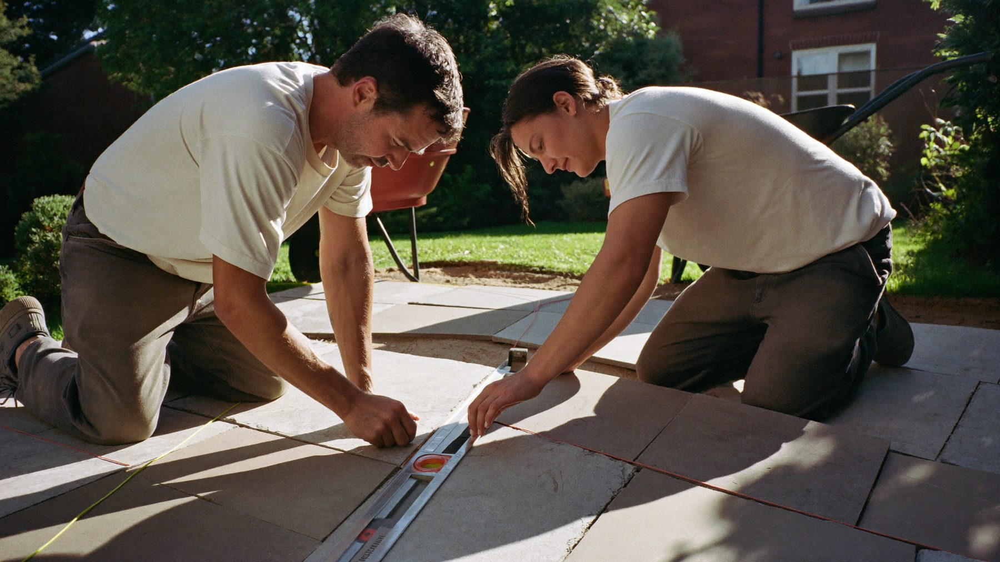
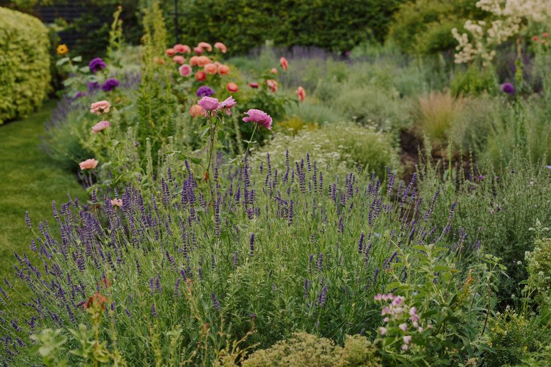
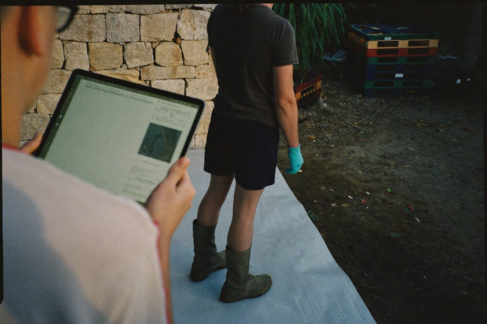
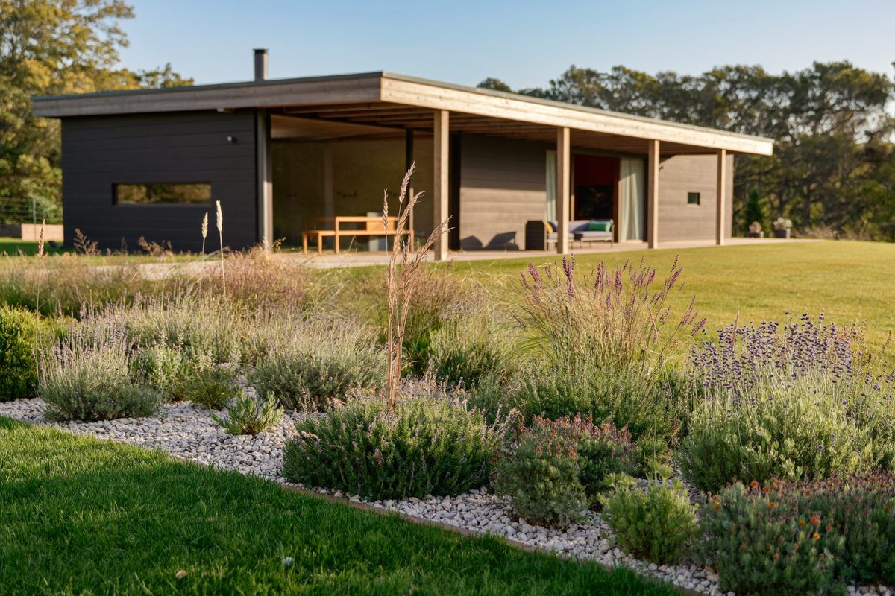

BrancheDie Zukunft des Garten- und Landschaftsbaus: Trends 2026
Welche Entwicklungen prägen die grüne Branche – von Fachkräftemangel bis Klimaanpassung. Ein kompakter Ausblick für Betriebsinhaber.
Erscheint in KürzePraxiswissen, Trends und Strategien für Betriebe im Garten- und Landschaftsbau – kompakt, relevant und direkt anwendbar.

BrancheWelche Entwicklungen prägen die grüne Branche – von Fachkräftemangel bis Klimaanpassung. Ein kompakter Ausblick für Betriebsinhaber.
Erscheint in Kürze
RecruitingWarum klassische Stellenanzeigen nicht mehr reichen – und wie moderne Betriebe heute planbar neue Mitarbeiter gewinnen.
Erscheint in Kürze
GestaltungMediterrane Gartenkonzepte liegen im Trend. Wir zeigen, welche Pflanzkombinationen robust, pflegeleicht und optisch überzeugend sind.
Beitrag lesen →Reichweite ist kein Zufall. Wie Betriebe mit Video-Content lokale Sichtbarkeit aufbauen und Bewerber wie Kunden anziehen.
Erscheint in Kürze
DigitalisierungVon der Angebotserstellung bis zur Einsatzplanung – wie kleine und mittlere Betriebe mit den richtigen Tools Zeit zurückgewinnen.
Erscheint in Kürze
BrancheDer Klimawandel verändert die Pflanzenwahl. Eine Auswahl trockenheitstoleranter Arten, die auch in Zukunft zuverlässig gedeihen.
Erscheint in KürzeVereinbare jetzt ein kostenloses Erstgespräch und werde unsere nächste Erfolgsgeschichte.
Kostenloses Gespräch vereinbaren